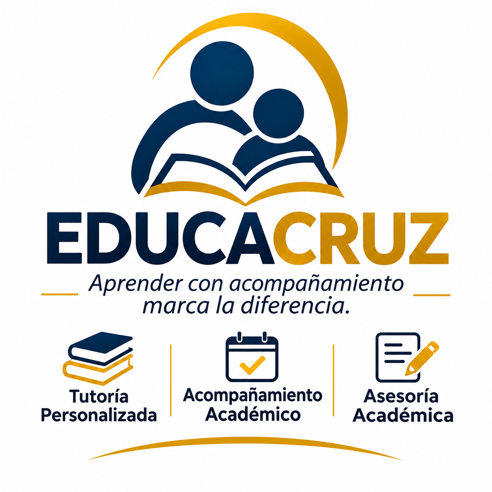
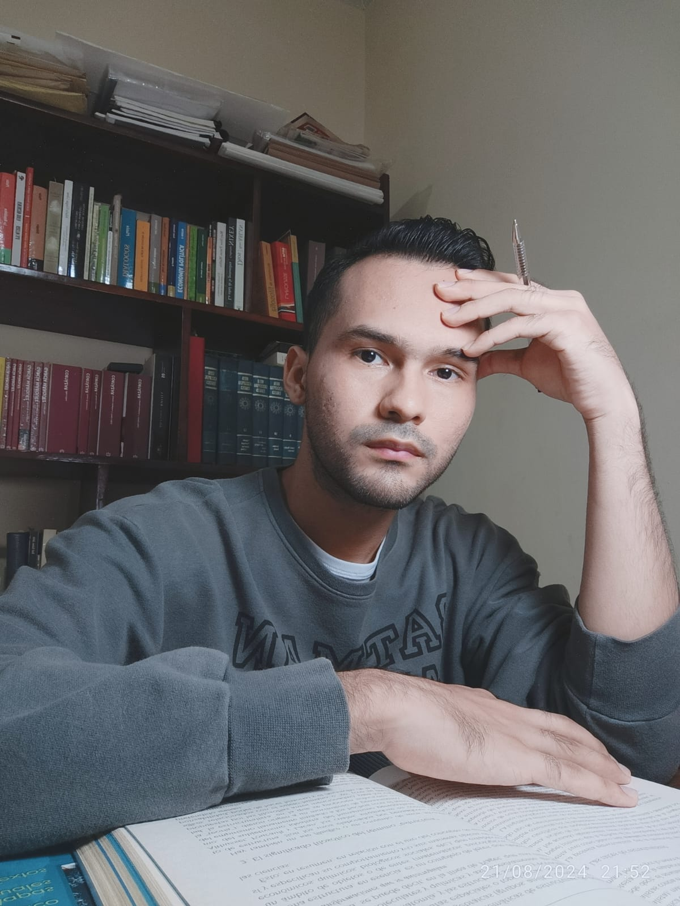

Tutoría personalizada
Intervención pedagógica individual para fortalecer conocimientos y habilidades mediante explicaciones, ejercicios y actividades de aprendizaje.

EDUCACRUZAprender con acompañamiento marca la diferencia.EDUCACIÓN · ACOMPAÑAMIENTO · APRENDIZAJE
Acompañamiento educativo pensado para fortalecer aprendizajes, desarrollar habilidades y avanzar con confianza.
UN ESPACIO PARA APRENDER
Encuentra el servicio, recurso o información que necesitas.

CONÓCENOS
EDUCACRUZ es una propuesta de apoyo educativo dirigida a fortalecer los aprendizajes y acompañar el proceso escolar de cada estudiante mediante tutorías personalizadas, acompañamiento académico y asesoría académica.
Está liderada por un Licenciado en Literatura y Lengua Castellana y tutor independiente, con formación en el campo de la educación y especial interés en la enseñanza de la lengua, la literatura, la lectura y la escritura.
Su trabajo parte del reconocimiento de las necesidades de cada estudiante y busca desarrollar conocimientos, habilidades y mayor autonomía académica, respetando sus ritmos y formas de aprender.
PERFIL PROFESIONAL
Licenciado en Literatura y Lengua Castellana y tutor independiente. Su formación se orienta al campo de la educación, la enseñanza de la lengua y la literatura, y el fortalecimiento de los procesos de aprendizaje en educación básica.
Desde EDUCACRUZ desarrolla acciones de tutoría personalizada, acompañamiento académico y asesoría académica. Su trabajo se centra en reconocer las necesidades de cada estudiante, orientar el desarrollo de actividades escolares y fortalecer conocimientos y habilidades mediante estrategias ajustadas a sus características y ritmo de aprendizaje.
Promueve especialmente la lectura, la comprensión, la interpretación y la producción escrita, así como el desarrollo progresivo de la autonomía académica.
QUÉ HACEMOS
Apoyo académico organizado de acuerdo con las necesidades del estudiante.
Intervención pedagógica individual para fortalecer conocimientos y habilidades mediante explicaciones, ejercicios y actividades de aprendizaje.
Seguimiento continuado al proceso de aprendizaje, con orientación, apoyo y reconocimiento de avances y dificultades.
Orientación y apoyo para comprender y desarrollar tareas, talleres y otras actividades escolares.
INVERSIÓN EDUCATIVA
Consulta las tarifas de tutoría, acompañamiento mensual y desplazamiento a domicilio.
$12.000/ 1 hora
2 horas: $17.000
3 horas: $22.000
Desde $80.000
Tarifa mínima mensual garantizada. El servicio completo se liquida según la frecuencia y las sesiones programadas.
2 días por semana
8 sesiones mensuales de 2 horas: $136.000
3 días por semana
12 sesiones mensuales de 2 horas: $204.000
El desplazamiento a domicilio se cobra por separado y depende de la zona. El documento descargable contiene las condiciones y tablas completas.
Consulta los valores, condiciones del servicio y tarifas de desplazamiento a domicilio.
RECESO ESCOLAR
Semanas de trabajo académico para aprovechar el receso escolar, reforzar aprendizajes y preparar el siguiente periodo.
Cinco jornadas por semana, con dos horas diarias de atención, para un total de diez horas semanales.
Inglés, Matemáticas y Lengua Castellana, de acuerdo con el área que seleccione la familia.
15 % de descuento por una semana y 20 % por la contratación de dos o más semanas.
Fechas, tarifas, descuentos, transporte a domicilio y condiciones de participación.
FORMACIÓN DISCIPLINAR
Espacio destinado exclusivamente a propuestas de formación en literatura y lengua castellana.
Esta sección reunirá cursos orientados al estudio de la lengua, la lectura, la escritura y la literatura. Los contenidos y las condiciones de cada propuesta se publicarán cuando se encuentren disponibles.
Próximamente se anunciarán aquí los cursos, sus objetivos, contenidos, modalidad y fechas.
NUESTRO ENFOQUE
Una propuesta educativa que integra intervención personalizada, continuidad y orientación académica.
Intervención pedagógica directa durante las sesiones: explicaciones, ejercicios, actividades y retroalimentación ajustadas a las necesidades del estudiante.
Proceso continuado de orientación, apoyo y seguimiento para reconocer avances, atender dificultades y favorecer la constancia.
Orientación para comprender y desarrollar actividades escolares, organizar procedimientos y avanzar hacia una mayor autonomía.
El servicio reconoce las necesidades particulares del estudiante, planifica estrategias pedagógicas, desarrolla actividades de fortalecimiento y realiza seguimiento de los avances. Su propósito es contribuir al desempeño escolar, la consolidación de aprendizajes y el desarrollo progresivo de la autonomía académica.
Documento que desarrolla los fundamentos de la tutoría personalizada y el acompañamiento académico.
RECURSOS PARA APRENDER
Guías, talleres y recursos descargables para apoyar el aprendizaje.
La biblioteca se irá ampliando con nuevos materiales. Los archivos disponibles se publicarán aquí para consulta y descarga gratuita.
NOVEDADES
En este espacio compartiremos nuevos materiales, avisos de servicio y novedades de EDUCACRUZ.
Publicaremos nuevos recursos educativos organizados por grado y área.
HABLEMOS
Comunícate para consultar disponibilidad, resolver inquietudes o conocer el servicio adecuado.